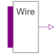

WiredXWired node with multiple input and one output |

|
Information
This information is part of the Modelica Standard Library maintained by the Modelica Association.
Wires n input signals in one output signal, without delay.
Resolution table is given by http://www.cs.sfu.ca/~ggbaker/reference/std_logic/src/std_logic_misc.vhd
Parameters (1)
| n |
Value: 2 Type: Integer Description: Number of inputs |
|---|
Connectors (2)
| x |
Type: DigitalInput[n] Description: Connector of Digital input signal vector |
|
|---|---|---|
| y |
Type: DigitalOutput Description: Connector of Digital output signal |
Used in Examples (1)
|
Modelica.Electrical.Digital.Examples Functionality test of WiredX |